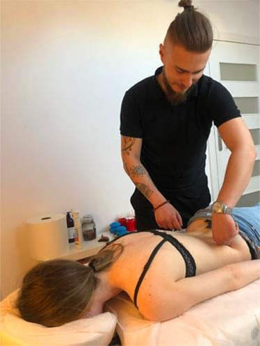
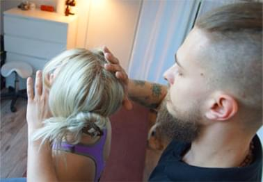
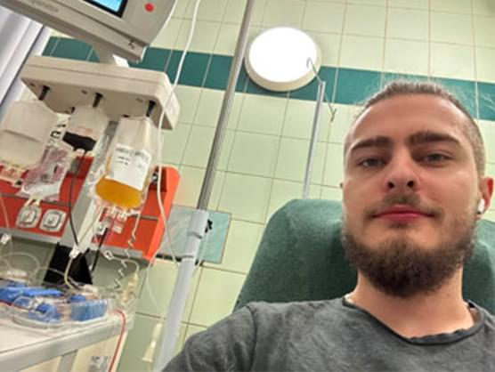
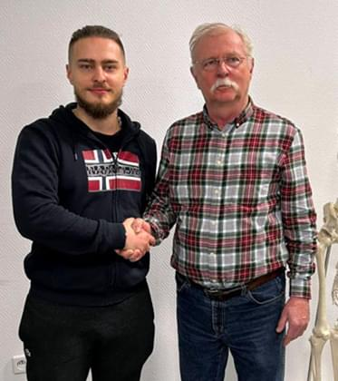

Swoją przygodę z Terapią Manualną zacząłem dwadzieścia parę lat temu, lecz nie
jako terapeuta a pacjent. Jako dziecko trafiłem na terapię do jednych z najlepszych
Chiropraktyków w Polsce Joanny Kieliszek i Grzegorza Jabłońskiego, którzy szkolili przyszłych
terapeutów między innymi moją Mamę.
Pani Joanna początkowo była mentorem mojej Mamy lecz z czasem stała się również moim
nauczycielem, przy którym mogłem zbierać swoje pierwsze szlify w zawodzie. Z Terapią mam
styczność całe życie, z perspektywy pacjenta i terapeuty, przez co wiem jak ważne jest
odpowiednie podejście do pacjenta przez terapeutę.
Mikołaj

Moja droga
Zawodowo
Ciągle rozwijam swoją wiedzę i umiejętności uczestnicząc w różnych kursach i
szkoleniach. Przykładem tego może być kurs zawodowy masażu zdrowotnego I i II stopnia w
Biostudio jak i studia Chiropraktyczne w Wyższej Szkole Nauk o Zdrowiu.

Moja misja
Od zawsze los innych ludzi nie był mi obojętny. Na co składa się m. in. bycie
przewodniczącym w szkolnym wolontariacie oraz aktywne uczestnictwo w wielu akcjach
charytatywnych. W 2023 roku oddałem szpik aby ratować cudze życie, gdyż życie i pomoc innym jest
wartością dla mnie nadrzędną.

